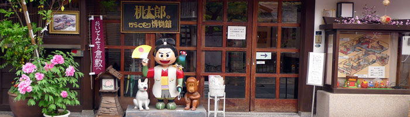
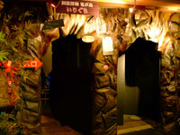
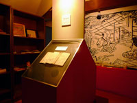
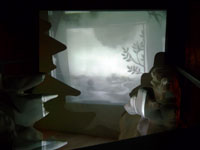
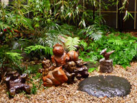
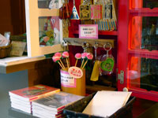

MOMOTARO'S KARAKURI MUSEUM桃太郎のからくり博物館

古くから語り継がれているお伽話の「桃太郎」。室町時代後期には現在のような内容が語り継がれていたといわれています。桃太郎のからくり博物館では、錦絵や浮世絵、玩具などの歴史資料を手がかりに私たちの暮らしとの関わりを探ることが出来ます。その他にもからくりあそびや映像シアター、洞窟探検、ちくわ笛コンサート（不定期）など見どころが盛り沢山で幅広い年齢層の方々が楽しめます。
洞窟探検「鬼が島」

スリル満点の洞窟で、たくさんの鬼と出会おう。鬼のくしゃみに吹き飛ばされないように。
桃太郎横丁

絵本や教科書、すごろく、玩具など色々な桃太郎と出会うことが出来ます。
映像シアター

昔なつかしい桃太郎のアニメーションを楽しめます。
ちくわ笛コンサート（不定期）
館長の住宅さんによるちくわ笛コンサートは、童謡、唱歌などが坪庭にて演奏されます。
桃太郎の坪庭

館内の中ほどにある坪庭では、館長とスタッフ制作による備前焼の桃太郎と犬・猿・雉や鬼たちが飾られています。
ミュージアムショップ

アクセサリーやポストカード、桃太郎の関連グッズが揃います。
一覧に戻る